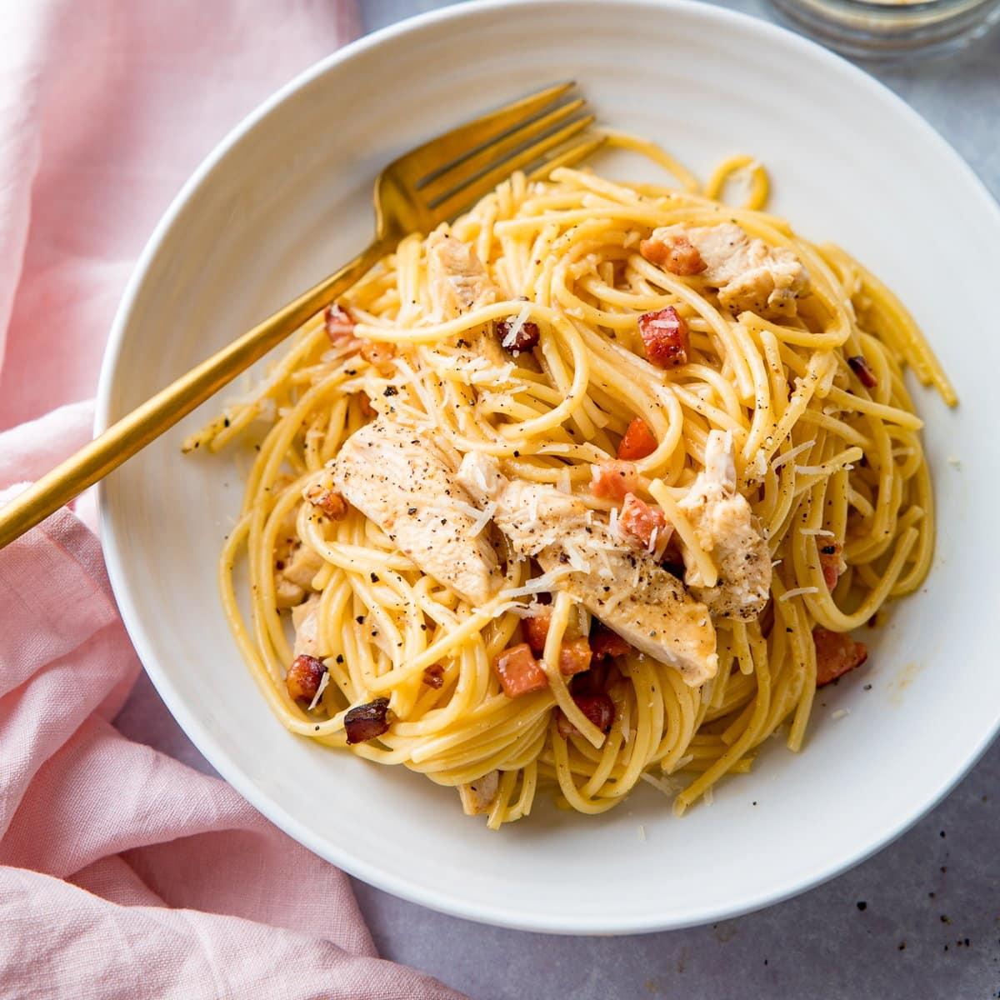

Risotto is an Italian dish that comes from northon Italy that is made from short
grain rice with a beef or vegtable stock, butter, onions and white wine.

Margherita pizza is a tradintional pizza dish from Naples Italy which is a dough
base topped with tomato sauce, mozzarella cheese and basil.
Lasagne is an Italian dish that is made from sheets of pasta stacked on top of
each other with a filling in the middle. This filling is made from meats and cheese.
Polenta

Polenta is an Italian dish that is made from grinding corn into a flour. Which
is then cooked to a creamy and thick texture. It can be ate like a porridge or left to set into a bread/pasta
form.
Ravioli

Ravioli are an Italian dish which are a square or round pillow shaped pasta that
are filled with a stuffing. These fillings consist of meats, cheese and vegtables, the meat can be removed for a
vegetarian option.
Focaccia

Focaccia is an Italian flat bread dish that is either sweet or savory. Focaccia is like pizza crust that is 1
inch thick and flavoured in oil and covered in vegetables. The bread will have small indentations made to store
the flavour.
Carbonara

Carbonara is a pasta dish that contains eggs, hard
cheese, meat and black pepper. The cheese that is usually used is Pecorino Romano, Parmigiano-Reggiano, or
a mixture.
Tiramisu
Tiramisu is an Italian dessert which is made from ladyfinger cookies that are
soaked in coffee and liquor, cheese, and topped with cocoa powder.
Ossobuco
Ossobuco is an Italian dish that is made from veal shanks that are braised in
wine and seasonal stock cubes. Flavoured by cinnamon & gremolata. Served alongside vegtables.
< >